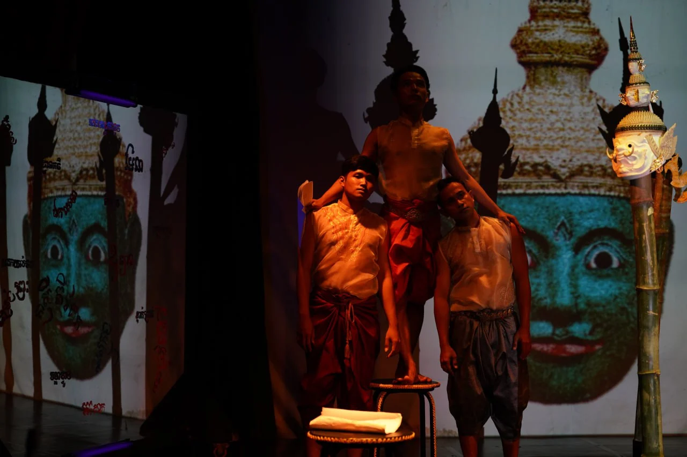
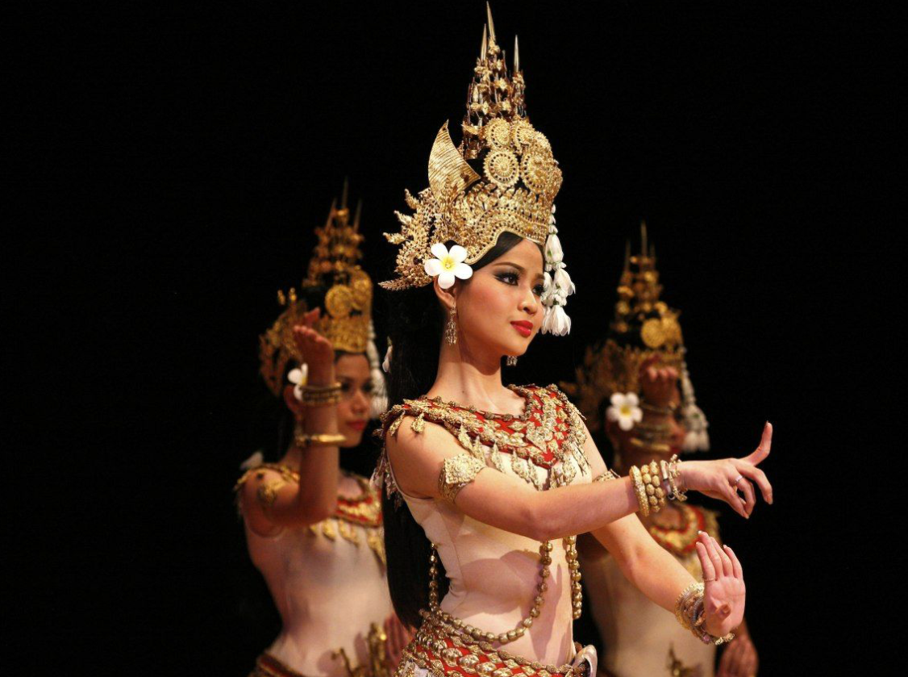
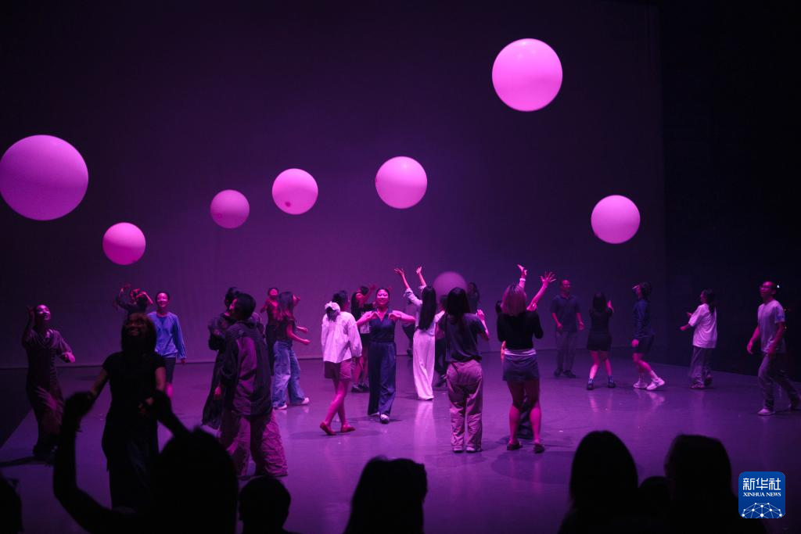
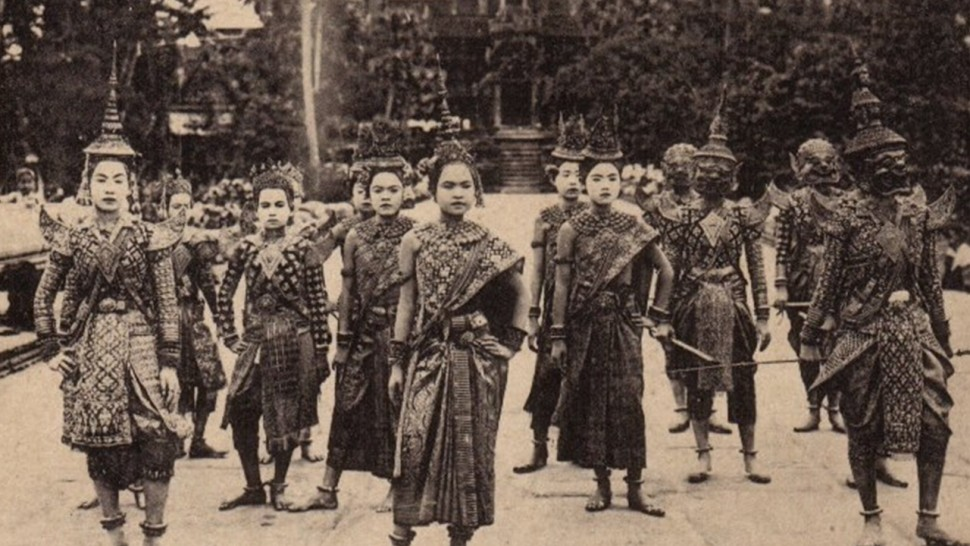

ដំណើរវិវត្តន៍ នៃរបាំខ្មែរ
ចាប់ពីសម័យអង្គររហូតដល់ការទទួលស្គាល់ជាបេតិកភណ្ឌវប្បធម៌អរូបីរបស់មនុស្សជាតិដោយអង្គការ UNESCO របាំខ្មែរបានឆ្លងកាត់ការអភិវឌ្ឍ និងការអភិរក្សអស់រយៈពេលជាច្រើនសតវត្សរ៍
ប្រភពដើមនៅសម័យអង្គរ
សិល្បៈរបាំអប្សរាបានកើតចេញពីប្រាសាទអង្គរ ជាតំណាងនៃទេព្តានៅលើស្ថានសួគ៌ ត្រូវបានចម្លាក់នៅជញ្ជាំងប្រាសាទរាប់ពាន់។

របាំក្នុងព្រះរាជសំណាក់
របាំព្រះរាជទ្រព្យត្រូវបានសម្ដែងក្នុងពិធីបុណ្យ ពិធីសាសនា និងពិធីរាជការ។ ក្នុងអំឡុងពេលនេះ ក្បាច់រាំ សម្លៀកបំពាក់ និងបទភ្លេងត្រូវបានរៀបចំ និងអភិវឌ្ឍឱ្យមានលក្ខណៈជាប្រព័ន្ធ។
.jpg)
ការស្ដារឡើងវិញនៃវប្បធម៌
បន្ទាប់ពីរបបប្រល័យពូជសាសន៍ សិល្បករដែលនៅរស់បានបង្រៀនឡើងវិញ ដើម្បីស្ដារនូវវប្បធម៌ដ៏សំខាន់ដែលស្ទើរតែបាត់បង់។

ការទទួលស្គាល់ពី UNESCO
នៅឆ្នាំ ២០០៣ អង្គការ UNESCO បានប្រកាសឱ្យ របាំព្រះរាជទ្រព្យខ្មែរ (Royal Ballet of Cambodia) ជា "ស្នាដៃឯកនៃបេតិកភណ្ឌវប្បធម៌អរូបី និងមាត់សាស្ត្ររបស់មនុស្សជាតិ"។

របាំខ្មែរ ប្រភេទផ្សេងៗ
របាំខ្មែរមានប្រភេទជាច្រើន នីមួយៗមានលក្ខណៈ អត្ថន័យ និងប្រវត្តិដ៏ផ្សេងគ្នា។

របាំអប្សរា
របាំបុរាណដ៏ល្បីបំផុតរបស់ខ្មែរ បង្ហាញពីទេព្តានៅស្ថានសួគ៌ ជាមួយចលនាដៃ និងជើងដ៏ទន់ភ្លន់។

ល្ខោនខោល
ល្ខោនសម្តែងដ៏អស្ចារ្យបំផុតរបស់ខ្មែរ ដែលប្រើសម្លៀកបំពាក់ និងមុខសំយោគដ៏ស្រស់ស្អាត។
.jpg)
របាំប្រជាប្រិយ
របាំដែលសម្តែងក្នុងពិធីបុណ្យប្រជាប្រិយ ឆ្លុះបញ្ចាំងពីជីវិតប្រចាំថ្ងៃ និងប្រពៃណីខ្មែរ។

របាំទំនើប
ការផ្សំបញ្ចូលគ្នារវាងរបាំបុរាណ និងស្ទីលទំនើប ដើម្បីបង្ហាញពីភាពច្នៃប្រឌិតថ្មី។
កេរ្តិ៍ដំណែលនៃរបាំខ្មែរ
របាំខ្មែរត្រូវបានអភិរក្ស និងបន្តរក្សាទុកអស់រយៈពេលជាច្រើនសតវត្សរ៍ តាមរយៈព្រះរាជសំណាក់ ប្រាសាទ និងគ្រូបុរាណដែលបានលះបង់កម្លាំងកាយចិត្តក្នុងការបន្តផ្ទេរចំណេះដឹង និងជំនាញរបាំទៅកាន់មនុស្សជំនាន់ក្រោយ.
